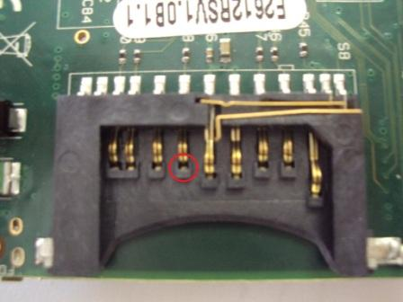
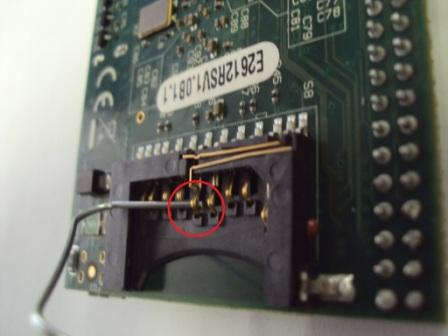
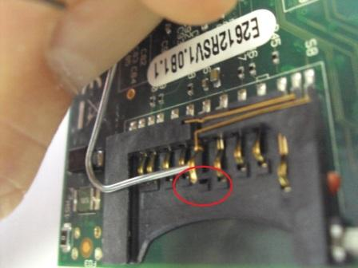
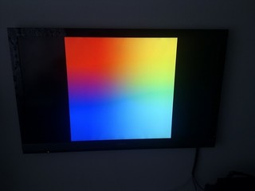
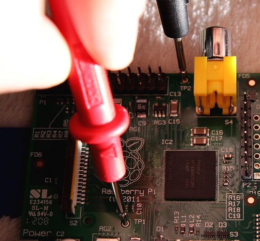
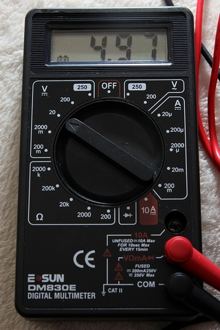

Изначальная дата публикации: 04.10.2012
В этой статье перечислены основные неисправности и проблемы, возникающие с Raspberry Pi и некоторые способы их решения.
1. Проблемы с питанием или в момент включения
Качественный источник питания — самый главный залог отсутствия проблем! Для решения проблем с питанием устройства смотрите соответствующий раздел.
1.1 Красный индикатор не горит, нет изображения на экране
Отсутствует питание устройства. Проверьте источник питания.
В нормальной ситуации красный индикатор PWR мигать не может, т.к. напрямую подключен к шине питания. Однако, есть сообщения, что красный светодиод мигает при подключении к источнику питания, напряжением менее 5 В. В этой ситуации нужно заменить источник питания.
1.3 Красный индикатор горит, зеленый не мигает, нет изображения на экране

1.4 Зеленый индикатор мигает в определенном порядке
На свежих версиях прошивок зеленый индикатор мигает в определенном порядке, в зависимости от неисправности:
Если start.elf не может загрузиться, то возможно он поврежден и может быть заменен файлом arm240_start.elf или другим из файлов armXXX_start.elf.
1.5 Появляется только разноцветный квадрат на экране

В свежих прошивках после загрузки самой прошивки (start.elf) отображается разноцветный квадрат. В будущем, квадрат будет заменен на консоль командной строки Linux. Однако, в настоящее время, если возникает такой квадрат и загрузка останавливается, это означает, что не получилось загрузить файл kernel.img. Попробуйте заменить этот файл исправным.
Кроме того, сразу после появления этого квадрата у Raspberry Pi несколько возрастает потребление тока питания. Поэтому, если устройство перезагружается в этот момент, это говорит о том, что блок питания не способен обеспечить необходимую мощность. Из-за недостатка мощности снижается напряжение, что приводит к перезапуску.
1.6 Ошибка Kernel Panic при загрузке
Загрузка начинается, но затем останавливается и выдается соответствующее сообщение. Чаще всего, такая ошибка связана с несовместимыми устройствами USB, как правило с клавиатурами. Попробуйте отключить клавиатуру и загрузить устройство снова.
1.7 Raspberry Pi выключается или перезагружается сразу после загрузки
Причина такого поведения заключается в недостаточном напряжении питания. Для решения проблем с питанием устройства смотрите соответствующий раздел в конце статьи.
1.8 Компьютер иногда загружается, но не каждый раз
При гарантированно исправном блоке питания и проверенной SD карте, Raspberry Pi загружается лишь время от времени. В остальные разы зеленый индикатор ОК загорается, но загрузки не происходит, даже при отключенных устройствах USB и отключенном сетевом подключении. Сообщения о такой проблеме появляются иногда на форумах и общего решения до сих пор не существует. Предполагается, тем не менее, что виноват либо блок питания, либо SD карта. Некоторые устройства нормально работают лишь до тех пор, пока не нагреются (также нагреву подвержены блоки питания и SD карты). Для сведения — при комнатной температуре (21 градус Цельсия) никакая часть находящегося без корпуса и не разогнанного Raspberry Pi не должна нагреваться выше 41 градуса. Проверьте еще раз, что ваша SD карта находится в списке совместимых и имейте в виду, что по некоторым оценкам не менее 1/3 из всех карт «Sandisk» являются подделками!
Также еще раз рекомендуется проверить контакты держателя SD карт, как это описано в пункте 1.3.
2. Клавиатура, мышь и другие устройства ввода
2.1 Компьютер не реагирует на клавиатуру или нажатая клавиша многократно повторяется («залипает»)
Все эти проблемы возникают из-за недостатка питания. Используйте мощный блок питания с качественным кабелем. Некоторые блоки питания с некачественными проводами дают достаточно энергии для зарядки сотового телефона, но недостаточно для питания Raspberry Pi. Некоторые устройства USB требуют очень высокую мощность источника питания. Большинство таких устройств имеют маркировку с указанием требуемого напряжения питания и тока. Минимально такие устройства потребляют 5 В 100 мА каждое, поэтому чаще всего требуется отдельный USB концентратор (хаб) с внешним питанием. Попробуйте отключить все устройства USB за исключением клавиатуры. Обратите внимание на то, что некоторые клавиатуры имеют встроенный USB концентратор, они потребляют порядка 150 мА, в то время как Raspberry Pi предоставляет лишь 100 мА на каждый порт USB при отсутствии дополнительного питания. Также, судя по сообщениям на форумах, в отдельных случаях помогает обновление версии операционной системы.
2.2 Клавиатура и мышь не работают вместе с устройством USB WiFi
Одновременное подключение клавиатуры или мыши и USB адаптера WiFi могут вызвать сбои в работе всех устройств. Эти сбои возникают из-за большой разницы в скорости обмена высокоскоростного WiFi адаптера и низкоскоростных клавиатуры и мыши. Тем не менее, многие подобные проблемы решаются подбором более качественного блока питания. Возможно, стоит попробовать разные варианты подключения, например WiFi адаптер подключается непосредственно к Raspberry Pi, а клавиатура с мышью к USB концентратору с внешним питанием. Также, имеет смысл попробовать другие варианты, но в любом случае нужно помнить, что качественное питание устройства необходимо в первую очередь..
2.3 Проблемы с беспроводной клавиатурой
Некоторые беспроводные клавиатуры, например Microsoft Wireless Keyboard 800 не работают с Raspberry Pi, несмотря даже на достаточное питание. Это является проблемой драйвера операционной системы. Перед покупкой клавиатуры, убедитесь, что она входит в список совместимого оборудования. Здесь можно посмотреть список работоспособных USB клавиатур и мышей, а здесь список клавиатур и мышей, которые не будут работать.
2.4 Введенные символы не соответствуют клавиатуре
Если введенные символы на экране не соответствуют указанным на клавиатуре, нужно изменить раскладку клавиатуры. Для этого введите следующую команду:
sudo dpkg-reconfigure keyboard-configuration
Дальше следуйте указаниям на экране. После выхода из программы перезагрузите компьютер.
Или:
Наберите в командной строке терминала следующую команду:
sudo nano /etc/default/keyboard
В открытом файле найдите строку:
XKBLAYOUT=”gb”
и замените в ней двухбуквенный код страны.
Еще одним способом выбора раскладки клавиатуры является использование команды:
sudo raspi-config
2.5 Долго загружаются настройки клавиатуры
Если вы заменили раскладку клавиатуры и после этого время загрузки компьютера увеличилось, попробуйте ввести следующую команду:
sudo setupcon
2.6 Устройства USB не работают при заведомо исправных устройствах и источнике питания
Существуют сообщения о том, что Raspberry Pi нормально загружается, но отказывается работать с устройствами USB при заведомо исправных источнике питания, SD карте и самих устройствах. Помните, что 99% проблем тем не менее связаны с недостаточным питанием! Однако, если все проверено, то проблемой может быть отсутствие тактового сигнала на микросхему LAN9512 USB/Ethernet контроллера «IC3″. Решением в таком случае будет пропайка 25 МГц тактового генератора «X1″, который находится на нижней стороне платы. Другим вариантом решение проблемы может быть ремонт платы по гарантии. Еще раз подчеркнем, что чаще всего подобные проблемы вызваны недостаточным питанием или несовместимостью оборудования. По статистике, заводские дефекты любого типа встречаются не чаще, чем в одном устройстве из тысячи!
3. Обновление прошивки Raspberry Pi
Использование свежей версии прошивки устройства может решить разные проблемы, например связанные с несовместимостью SD карт или мониторов. Проверить версию ядра Linux можно следующей командой:
uname -a
Linux RPi 3.1.19 #1 PREEMPT Fri Jun 1 14:16:38 CEST 2012 armv6l GNU/Linux
Прошивка графического сопроцессора GPU проверяется так:
/opt/vc/bin/vcgencmd version
May 31 2012 13:35:03
Copyright (c) 2012 Broadcom
version 317494 (release)
Прошивку графического сопроцессора можно обновить при помощи этой утилиты Hexxeh’s rpi-update tool.
Но для того, чтобы запустить утилиту, Raspberry Pi должен нормально загрузиться. Если ваш компьютер не загружается, то можно попробовать обновить прошивку вручную. Если у вас есть компьютер с установленной Linux, то можно запустить rpi-update на нём и он обновит содержимое SD карты.
С другой стороны, с компьютера на Windows можно получить доступ только к разделу «/boot» вашей SD карты. Скачайте прошивку здесь (нажмите View Raw и сохраните содержимое в файл start.elf) и замените соответствующий файл на карте. Аналогично, можно обновить ядро системы по ссылке. После замены этих двух файлов Raspberry Pi должен загрузиться. Тем не менее, после загрузки придется запустить программу rpi-update для того, чтобы обновить модули ядра (/lib/modules) и библиотеки GPU (/opt/vc).
3.3 Выбираем правильную модель разделения памяти ARM/GPU
Существует несколько моделей разделения памяти между процессором ARM и графическим сопроцессором GPU:
arm240_start.elf : 240M ARM, 16M GPU split : Максимум памяти процессора. Подходит для задач, в которых не используется видео и 3D.
arm224_start.elf : 224M ARM, 32M GPU split : Новый режим. Минимально достаточный для запуска графической среды и простых программ.
arm192_start.elf : 192M ARM, 64M GPU split : Средний режим. Простое видео (omxplayer) или 3D (quake). Используется по умолчанию.
arm128_start.elf : 128M ARM, 128M GPU split : Используйте этот режим для серьезных задач 3D или просмотра видео вместе с 3D. Необходим для XBMC.
Для переключения вручную, замените файл start.elf одним из перечисленных выше и перезагрузите компьютер. Например:
sudo cp /boot/arm240_start.elf /boot/start.elf && sudo reboot
Замечание: файл arm224_start.elf в обычном случае использовать не стоит. arm240_start.elf будет лучшим выбором.
К счастью, большинство проблем с картами памяти чаще всего связаны с неисправными картридерами. Некоторые пользователи советуют продуть сжатым воздухом внутренности картридера, это может помочь восстановлению. Проблемы с картридерами, которые неверно определяют состояние защиты от записи, иногда решаются установкой переключателя защиты от записи в промежуточное положение. При этом картридер считывает его состояние верно. В конце концов, USB картридер стоит недорого (дешевле карты памяти) и всегда можно попробовать воспользоваться другим устройством.
5.1 Соединение теряется при подключении устройства USB
Чаще всего это происходит из-за недостаточной мощности источника питания. Используйте качественный источник питания и качественные провода. Некоторые блоки питания с некачественными проводами дают достаточно энергии для зарядки сотового телефона, но недостаточно для питания Raspberry Pi. Некоторые устройства USB потребляют большой ток (более 100 мА), поэтому должны подключаться с помощью концентратора с внешним питанием. Также, некоторые дешевые USB концентраторы потребляют ток от Raspberry Pi, даже при наличии внешнего источника питания. (Иногда, хотя и редко, встречается ситуация с такими недорогими устройствами, когда Raspberry Pi сам потребляет энергию от внешнего концентратора, что в конечном итоге не дает возможности загрузиться без сбоев)
Также бывают случаи, когда сетевое соединение теряется при подключении через концентратор с внешним питанием низкоскоростных устройств USB, например мыши или клавиатуры. В этой ситуации можно посоветовать подключить эти устройства напрямую к USB портам Raspberry Pi (конечно при условии, что ток потребления каждого из этих устройств не превышает 100 мА).
5.2 Соединение происходит на скорости 10 Мбит/с вместо 100 Мбит/с
Дело в том, что индикатор в углу платы с обозначением «10M» обозначен неверно. В действительности, в то время, когда индикатор горит, соединение осуществляется на скорости 100 Мбит/с. Это легко проверить с помощью утилиты тестирования скорости соединения, такой как iperf. Также, скорость соединения можно проверить командой:
cat /sys/class/net/eth0/speed
5.3 Не получается подключиться по SSH
В образах операционной системы Debian сервер ssh отключен по умолчанию. Список программ для автозагрузки берется из файла /boot/boot.rc, при условии, что он существует. В то же время, в загрузочном разделе записан образец файла с загрузкой сервера ssh. Поэтому, для включения автоматической загрузки достаточно выполнить следующую команду:
sudo mv /boot/boot_enable_ssh.rc /boot/boot.rc
и после перезагрузки сервер ssh будет запущен (имя пользователя и пароль для входа такие же, как и при входе в систему).
5.4 Микросхемы сетевого адаптера и контроллера USB сильно греются
Это нормально. На открытом воздухе и при комнатной температуре 24 градуса микросхема LAN9512 контроллера Ethernet/USB может нагреваться до 52-х градусов в процессе работы. При такой температуре уже не получается дотрагиваться до корпуса более чем на пару секунд, но это абсолютно нормальный режим работы для микросхемы.
В спецификации микросхемы LAN9512 в таблице 4.1 на странице 40 говорится, что микросхема выпускается в двух вариантах — коммерческом и промышленном. В коммерческом исполнении максимальная рабочая температура составляет 70 градусов, а в промышленном — 85 градусов. Такой высокий нагрев связан с высоким уровнем потребления, который может достигать 763 мВт при напряжении питания 3.3 В при максимальной загрузке сетевого интерфейса на 100 МБит/с и обоих USB портов. (Таблица 4.3.4, стр. 42).
Также, существует исследование, проведенное пользователем «Remy», которое можно посмотреть по ссылке на испанском языке ¿Se calienta el ordenador Raspberry Pi? Estudio de sus temperaturas en funcionamiento (Греется ли Raspberry Pi? Исследование рабочих температур). В этой статьи приводятся снимки платы, сделанные тепловизором в различных режимах работы. Максимальная температура, зарегистрированная для микросхемы LAN9512 является 64.5 градуса.
5.5 Сеть перестает работать при переносе SD карты с одного Raspberry Pi на другой
В некоторых дистрибутивах в файле /etc/udev/rules.d/70-persistent-net.rules запоминается какой MAC адрес привязан к интерфейсу eth0, поэтому изменение MAC адреса приводит к созданию нового интерфейса (eth1, eth2, и т.д.). Отредактируйте файл /etc/udev/rules.d/70-persistent-net.rules, уберите ненужные привязки и перезагрузите компьютер.
5.6 Происходят сбои при высокой нагрузке на сеть
Дело в том, что драйверу USB выделяется оперативная память из области ядра системы, поэтому при очень большой нагрузке на сеть (например при использовании торрентов) нехватка памяти вызывает критические сбои или зависания системы. Найдите строку:
vm.min_free_kbytes = 8192
в файле /etc/sysctl.conf. Попробуйте увеличить параметр до 16384 или больше. Если это не поможет, попробуйте добавить строку в файл /boot/cmdline.txt:
smsc95xx.turbo_mode=N
Она снизит скорость сетевого обмена, но позволит избежать сбоев.
5.7 Пропадает сетевое соединение при запуске графической среды
Сетевое соединение может пропадать при запуске графической среди командой startx. Это вызвано ошибкой в драйвере USB, связанной с отдельными типами USB мышей.
По состоянию на 1 сентября 2012 года, эта ошибка исправлена, поэтому попытайтесь обновить прошивки устройства, как описано выше.
6.1 Я не знаю учетные данные (имя пользователя и пароль)
Вы можете посмотреть учетные данные по умолчанию для разных сборок операционных систем здесь: http://www.raspberrypi.org/downloads.
Вот наиболее часто встречающиеся комбинации имени пользователя и пароля:
6.2 Некоторые программы не принимают мой пароль
При использовании Debian, некоторые программы запрашивают пароль, но не опознают его.
Такая ошибка существовала в некоторых выпусках Debian и была исправлена. Если у вас появляется такая проблема, попробуйте ввести следующие команды в окне терминала:
gconftool-2 --type bool --set /apps/gksu/sudo-mode true
Убедитесь, что команда введена верно, особенно следите за пробелами. Неверно введенная команда не выдает сообщений об ошибках.
6.3 Я не знаю пароль суперпользователя (root)
В системе Debian отсутствует возможность войти в систему под учетной записью суперпользователя. Любые действия, требующие полные права должны совершаться с помощью команды sudo. Если вы уверены, что учетная запись суперпользователя вам необходима, можно назначить пароль суперпользователя командой «sudo passwd root».
7.1 Нет звука на мониторе, подключенном по HDMI
Это происходит потому, что некоторые компьютерные мониторы используют режим DVI даже при подключенном кабеле HDMI. В случае когда другие устройства, подключенные к этому монитору по HDMI работают нормально, можно исправить проблему с Raspberry Pi с помощью изменений в конфигурационном файле config.txt.
Как редактировать этот файл можно прочесть например в этой статье в разделе «Убираем черную рамку вокруг экрана».
Добавьте следующую строку в конфигурационный файл:
hdmi_drive=2
Это заставит монитор переключиться в режим HDMI.
7.2 Нет звука совсем или в отдельных приложениях
В Raspbian звук отключен по умолчанию, по той причине, что звуковой драйвер ALSA до сих пор находится в состоянии альфа-версии (т.е. не протестирован и не отлажен). Для того, чтобы включить звук, до запуска графической оболочки командой startx, введите следующие команды:
sudo apt-get install alsa-utils
sudo modprobe snd_bcm2835
В свежих версиях Raspbian (Debian Wheezy) драйвер snd_bm2835 включен изначально, поэтому предыдущий шаг не нужен. Попробуйте это:
sudo aplay /usr/share/sounds/alsa/Front_Center.wav
По умолчанию, выход звука определяется автоматически (т.е. HDMI, если устройство способно проигрывать звуки, в остальных случаях выход наушников). Однако, выход звука можно указать вручную:
sudo amixer cset numid=3 <n>
где n=0 — автоматический режим, n=1 — наушники, n=2 — hdmi.
Для проверки наличия звука удобно использовать программу hello_audio. В свежих выпусках прошивок Raspberry Pi для компиляции программы введите следующие команды:
cd /opt/vc/src/hello_pi/
./rebuild.sh
cd hello_audio
На более старых прошивках программа компилируется так:
cd /opt/vc/src/hello_pi/hello_audio
make
После завершения компиляции, можно запустить программу для проверки аналогового выхода (наушников):
./hello_audio.bin
или:
./hello_audio.bin 1
для проверки HDMI.
Также, может понадобиться добавить пользователя, под учетными данными которого вы запускаете программу, в группу ‘audio’ для получения прав на доступ к звуковому устройству.
Ошибки при запуске графической среды командой:
startx
могут возникать из-за недостатка места на SD карте. По умолчанию, на карте размером 2 Гб получится всего несколько сотен мегабайт свободного места. Это место быстро занимается пользовательскими файлами. Убедитесь, что на карте памяти есть свободное место или расширьте раздел до максимального размера, если у вас карта памяти объемом больше 2 Гб (программой gparted). Также, при установке некоторые программы могут повредить файл настроек .Xauthority, который находится в домашнем каталоге. Попробуйте переименовать, переместить в другой каталог или удалить этот файл для решения проблемы.
Если монитор подключен по кабелю DVI — проверьте, что разъем надежно зафиксирован винтами. Если не помогло, то читайте п.8.7 данной инструкции.
8.3 Не воспроизводится видео или воспроизводится очень медленно
Поддержка аппаратного ускорения видео реализована только в проигрывателе XBMC и проигрывателе для командной строки omxplayer. Аппаратное ускорение поддерживается только для показа видео, закодированных H264. Аппаратное кодирование видео не поддерживается. Дополнительные кодеки не приобретались, т.к. это увеличило бы стоимость Raspberry Pi.
8.4 В LXDE присутствует только разрешение 800×480 (в Arch linux)
Это известная ошибка в дистрибутиве от 17 апреля 2012 года. Возникает из-за отсутствия некоторых настроек в файле конфигурации. Для исправления необходимо создать файл cmdline.txt командой:
sudo echo "dwc_otg.lpm_enable=0 console=ttyAMA0,115200 kgdboc=ttyAMA0,115200 root=/dev/mmcblk0p2 rootfstype=ext3 rootwait" >/boot/cmdline.txt
8.5 Большие черные поля вокруг небольшого изображения на мониторе высокой четкости (HD)
При первом запуске изображение может не заполнять экран полностью. Этот эффект называется «сжатая развертка» и он легко исправляется.
Замечание: многие телевизоры и мониторы умеют исправлять подобный эффект самостоятельно. Обратитесь к документации монитора и попробуйте изменить настройку через экранное меню. Затем, добавьте параметр «disable_overscan=1″, как описано ниже или с помощью программы «raspi-config».
Процедура редактирования конфигурационного файла подробно описана в статье «Звук на Raspberry Pi, OMXPlayer, Chromium и другие«. Повторим основные пункты здесь:
Добавьте следующие строки в конфигурационный файл:
Если корректировка не требуется:
disable_overscan=1
Для увеличения размера изображения:
overscan_left=-20
overscan_right=-20
overscan_top=-20
overscan_bottom=-20
Регулировка размера изображения производится экспериментальным подбором параметров в файле config.txt. Изменяйте параметры с шагом по 5 или 10 за один раз. Чем больше отрицательные числа вы укажете, тем меньше будет размер черного поля (т.е. при -40 поля будут меньше, чем при -20). Числа не обязательно должны быть одинаковыми, с их помощью можно попытаться отцентрировать изображение на экране.
8.6 Изображение выходит за границы экрана
При первом запуске, Raspberry Pi может выдавать изображение, выходящее за границы экрана на телевизоре в режиме 1080p (т.е. Full HD). Этот эффект называется «Overscan» и может быть исправлен созданием простого конфигурационного файла с помощью программы Блокнот на компьютере под управлением Windows.
Следуйте инструкциям из предыдущего раздела 8.5, но используйте положительные числа, например
overscan_left=20
overscan_right=20
overscan_top=20
overscan_bottom=20
8.7 Помехи или искажение цветов на HDMI или DVI мониторах
Чаще всего это может быть вызвано помехами в некачественном или слишком длинном видео кабеле. Есть способ увеличить мощность видео сигнала с помощью параметров конфигурации.
О редактировании конфигурационного файла можно прочесть например в этой статье в разделе «Убираем черную рамку вокруг экрана».
Добавьте следующую строку в конфигурационный файл:
config_hdmi_boost=4
Точное значение параметра config_hdmi_boost подбирается экспериментально. При этом, значение 1 используется для наиболее коротких кабелей, а значение 7 используется для самых длинных.
Обратите внимание, что преобразователи сигнала, типа HDMI-DVI, могут очень сильно ослаблять уровень сигнала. В этом случае попробуйте использовать большие значения параметра config_hdmi_boost даже при коротком кабеле.
Также, редактирование этого параметра может помочь в случаях, когда на мониторе совсем нет изображения или изображение периодически пропадает или цвета искажены (инвертированы).
В редких случаях проблемы с качеством изображения могут быть вызваны недостаточным напряжением питания. Смотрите часть 11 данной статьи («Исправление проблем с питанием»).
8.8 Отсутствует изображение по HDMI
Во-первых, проверьте как следует, что Raspberry Pi правильно подключен к монитору или телевизору (а также, что в настройках телевизора выбран именно тот разъем, к которому подключен компьютер).
В системе Raspbian добавьте строку в конфигурационный файл:
hdmi_safe=1
Если это не помогло, попробуйте задать параметр config_hdmi_boost, как описано выше («8.7 Помехи или искажение цветов на HDMI или DVI мониторах«):
config_hdmi_boost=4
Возможно, что монитор или кабель не получает сигнал о подключении устройства. Попробуйте добавить этот параметр в конфигурационный файл:
hdmi_force_hotplug=1
Наконец, попробуйте эти параметры:
hdmi_group=2
hdmi_mode=4
Они могут помочь в ситуации, когда монитор сообщает «input signal out of range».
Как последнее средство, попробуйте удалить (а лучше переименовать) конфигурационный файл config.txt на карте памяти.
Также, если ничего не помогло, попробуйте проверить напряжение питания в точках TP1 и TP2. Есть сообщения, что некоторые мониторы переходят в спящий режим, если напряжение питания Raspberry Pi меньше 5 В. Смотрите часть 11 данной статьи («Исправление проблем с питанием»).
8.9 Черно-белое изображение или отсутствие изображения на мониторах с композитным входом («колокольчиками»)
По умолчанию, изображение выводится на разъем HDMI, если он подключен или на композитный выход, если HDMI кабель не подключен. Отключите HDMI кабель, если собираетесь пользоваться композитным выходом.
Композитный выход работает в системе NTSC. Большинство современных телевизоров показывают такой видеосигнал нормально, однако некоторые старые модели могут показывать черно-белое изображение или не показывать вовсе. Для переключения формата видеосигнала используйте следующий параметр конфигурационного файла.
(О редактировании конфигурационного файла можно прочесть например в этой статье в разделе «Убираем черную рамку вокруг экрана».)
Добавьте такую строчку в в файл config.txt:
sdtv_mode=2
(Другие значения параметра: 0 — NTSC, 1 — NTSC для Японии, 2 — PAL, 3 — PAL для Бразилии)
Всегда помните, что логические уровни сигнала шины GPIO составляет 3.3 В и использование сигналов с уровнем 5 В недопустимо!
Если в результате кратковременного замыкания двух контактов разъема GPIO между собой или замыкания контакта питания на землю ваш Raspberry Pi перестал подавать признаки жизни — не пугайтесь. Это последствия срабатывания защитных предохранителей. Они автоматически восстанавливаются через некоторое время после устранения причины замыкания (требуется время, чтобы предохранитель остыл и полимер, содержащийся в нем кристаллизовался). Может понадобиться несколько часов на восстановление предохранителей, поэтому лучше отложить устройство в сторону и подождать.
Контакты разъема GPIO подключены напрямую к процессору ARM и весьма чувствительны к статике, поэтому постарайтесь не касаться контактов во время работы. Если ваше тело наэлектризовано, например с помощью синтетической одежды или ковров, то разряд статического электричества может вывести из строя Raspberry Pi. Поэтому, старайтесь всегда использовать заземление, перед тем, как касаться выводов GPIO или оборудования, подключенного к GPIO.
10.1 Неверно установлено время
Если часы не верно показывают время, попробуйте следующую команду:
sudo dpkg-reconfigure tzdata
Raspberry Pi не имеет энергонезависимых часов, поэтому часы продолжают идти с того момента, когда компьютер был выключен. Правильное время может быть установлено с помощью сервера сетевого времени или введено вручную.
10.2 Механические повреждения платы
Цилиндр серебряного цвета, расположенный рядом с разъемом питания microUSB — это конденсатор 220 мкФ («C6″ по схеме). Он сильно выступает над платой устройства и из-за маленьких контактных площадок легко может быть сломан. Назначение этого конденастора — фильтрация напряжения питания, т.е. он сглаживает скачки напряжения 5 В. При желании, отломанный конденсатор можно припаять обратно или обойтись без него. Если вы припаиваете конденсатор, проверьте его полярность по черной полоске на корпусе. На самом деле, конденсатор C6 предусмотрен «на всякий случай», что подразумевается правилами конструирования подобных устройств, поэтому при его отсутствии в большинстве случаев (с большинством источников питания) Raspberry Pi будет хорошо работать.
10.3 Не получается установить новое программное обеспечение
При попытке установки программного обеспечения (с помощью команды sudo apt-get install xxxx) возможно появление такой ошибки:
Package yyyy is not available
Это означает, что список доступных пакетов устарел. Перед тем, как устанавливать какие то программы всегда желательно обновлять список пакетов командой:
sudo apt-get update
11. Исправление проблем с питанием
При подозрении на проблемы с питанием, первой что нужно сделать — проверить напряжение питания непосредственно на плате устройства. Измерение напряжения осуществляется между двумя тестовыми площадками, отмеченными TP1 и TP2.


Используйте мультиметр, установленный на измерение постоянного напряжения до 20 В (режим «20V DC» или по другому «20V=»). В нормальной ситуации, вы должны получить значение напряжения от 4.75 до 5.25 В. Любые значения за этими пределами говорят о проблемах с питанием устройства.
Замечание: Даже, если мультиметр показывает напряжение в нормальных пределах, проблемы с питанием все равно могут существовать. Это связано с тем, что мультиметр показывает усредненное значение напряжения питания, в то время, как могут присутствовать кратковременные скачки напряжения. Кроме того, напряжение нужно измерять в тот момент, когда Raspberry Pi загружен вычислениями.
Причинами недостаточного напряжения питания могут быть:
Замечание: клавиатуры со встроенными экранами, концентраторами USB или подсветкой чаще всего являются причиной падения напряжения. Попробуйте заменить клавиатуру на более простую. Также, часто причинами проблем с питания являются адаптеры WiFi. Подключайте такие устройства с помощью USB концентраторов с отдельным питанием.
Наконец, попытайтесь включить компьютер с отключенным кабелем HDMI, отключенной сетью или без дополнительных устройств USB и следите за напряжением питания.
Оригинал статьи и фотографии взяты с http://elinux.org/R-Pi_Troubleshooting. Запись опубликована автором kgbplus в рубрике Raspbian, Новичкам. Добавьте в закладки постоянную ссылку.
Неисправности Raspberry Pi и борьба с ними: 2 комментария
Фотография дешёвого прибора DM830E с разряженной батарейкой говорит о том, что показания заведомо завышены.
Фотография мультиметра в статье приведена скорее для иллюстрации. В тоже время, судя по сообщениям на форуме, диапазон рабочих напряжений между точками TP1 и TP2 приведен верно (4.75 — 5.25 В), так что тексту можно доверять.
С другой стороны, пользоваться для контроля напряжения питания прибором с разряженной батарейкой конечно не стоит.